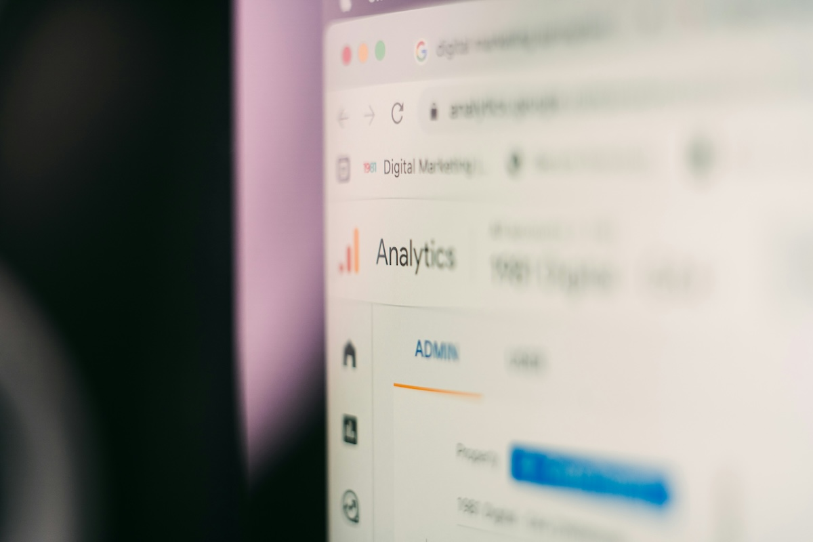

Sunshine Web Services is a “walk-in” web tune-up service for businesses, creators, and developers. The goal is simple: make your site feel faster, look cleaner, and communicate its message clearly on phones and desktops. Instead of rebuilding everything from scratch, we focus on high-impact fixes that noticeably improve the user experience in as little as a weekend. Whether you run a small shop, portfolio, or personal brand we can help it perform better without starting over.
Our checkups are designed around real issues most sites have in common: oversized images, messy spacing, confusing navigation, missing alt text, and pages that don’t pass basic validation. By pairing a quick audit with targeted, prioritized changes, we help you ship a more professional site without losing your existing branding or content. No full rebuilds, no surprises, and no confusing technical jargon. Just clear, measurable improvements you can see and feel right away.
